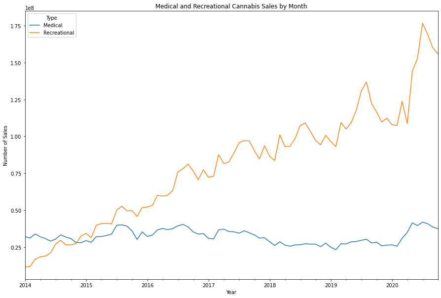

"Working Title" The Impact of Marijuana Sales on Colorado's DUI Records
Motivation for Problem
sample text
Figure 1
Introduction to Problem
sample text

Figure 2
Related Works
sample text

Figure 3
Design Description
sample text

Figure 4
Background of Data
In order to answer our research question we used existing data from The Colorado Department of Revenue for marijuana sales reports and public data from Colorado Crime States for DUI arrest data. The marijuana sales reports are stored as Excel files on Google Drive, so we downloaded the Excel files that started in January 2014 and ended in October 2020. These files contained data such as the month of the sale, the county of the sale, the number of sales per month per county, and the type of sale (recreational or medical). We ran these files through a function that combined these Excel files into one table, which was created using the pandas library. The public crime data we used starts in January 2014 and ends in February 2021. The dataset included data such as the county of the arrest, the number of arrests per county per month, the month of the arrest, and the type of arrest. In this case we only looked at arrests dealing with DUIs. Lastly we read in a Colorado county shapefile that included geographical information on each county in Colorado such as population data and geographical coordinates. This was used to create the Colorado spatial visualizations.
Figure 3
Discussion and Conclusion
After discussion of the findings from our data analysis we noticed significant themes that were consistent throughout the visuals. The first theme that we noticed was that since 2014, recreational sales of marijuana have been increasing every year. This along with medical marijuana sales remaining constant, and even seeing a slight decline, leads us to believe that marijuana consumption is increasing every year as well. Consumption of marijuana medically has now become almost obsolete as it is now legal to buy marijuana regardless of a medical card or not.
The second theme that we noticed was that marijuana sales and consumption is not only limited to urban areas, it has increased significantly across the state of Colorado since 2014. There are many possibilities to why this would occur. One of them being that there is a possible increase in population consumption of marijuana products. There could also be an increase in marijuana consumers moving into those areas from out of state, this could be further explored by looking at new Colorado residents since 2014. Lastly, we saw through our analysis that DUI arrests and the increase in marijuana sales has very little to no correlation. Suggesting that with the increase in sales of marijuana across the state, people driving under the influence of marijuana has not increased and has in fact declined a little as well.
References
- Reference 1
- Reference 2
- Reference 3